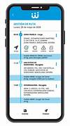

SERVIYA es una página diseñada para ofrecer el sercicio de transpote a las personas que seen viajar con destino naya-buenaventura o viceversa y además para el transporte interno del rio.ésta página de servicio de transporte marítimo para personas generalmente se trata de una plataforma en línea que proporciona información y facilita la reserva de viajes en bote para pasajeros. Esta página ofrece detalles sobre rutas, horarios y tarifas del transporte. Los usuarios pueden buscar y comparar diferentes opciones de viaje, realizar reservas y gestionar sus viajes desde la comodidad de su hogar a través de ésta plataforma digital. Estos servicios pueden ser utilizados para viajes de placer.
-
Accesibilidad las 24 horas
ésta página web permite a los usuarios acceder a los servicios de transporte marítimo y fluvial en cualquier momento del día o la noche, lo que brinda conveniencia y flexibilidad a los clientes que necesitan realizar reservas o consultar información sobre los servicios ofrecidos.
-
Facilidad de reserva y pago en línea
La capacidad de reservar y pagar por los servicios de transporte directamente a través de la página web ofrece comodidad a los clientes y simplifica el proceso de compra, lo que puede aumentar la tasa de conversión y la satisfacción del cliente.
-
Información detallada sobre rutas y servicios
esta página web proporciona información detallada sobre las diferentes rutas disponibles, horarios de salida, tarifas, servicios adicionales, y cualquier otra información relevante que los clientes puedan necesitar para planificar su viaje de manera efectiva.

-
Atención al cliente personalizada
ofrece opciones para que los clientes se pongan en contacto con el servicio de atención al cliente a través de chat en vivo, correo electrónico o formularios de contacto, lo que les permite obtener respuestas ráacute;pidas a sus preguntas o resolver problemas de manera eficiente.
-
Personalización y recomendaciones
Mediante el uso de tecnologíacute;as de anáacute;lisis y seguimiento, esta páacute;gina web puede personalizar la experiencia del usuario, ofreciendo recomendaciones relevantes basadas en el historial de navegación y las preferencias del cliente, lo que puede mejorar la satisfacción del cliente.
Ventajas Competitivas